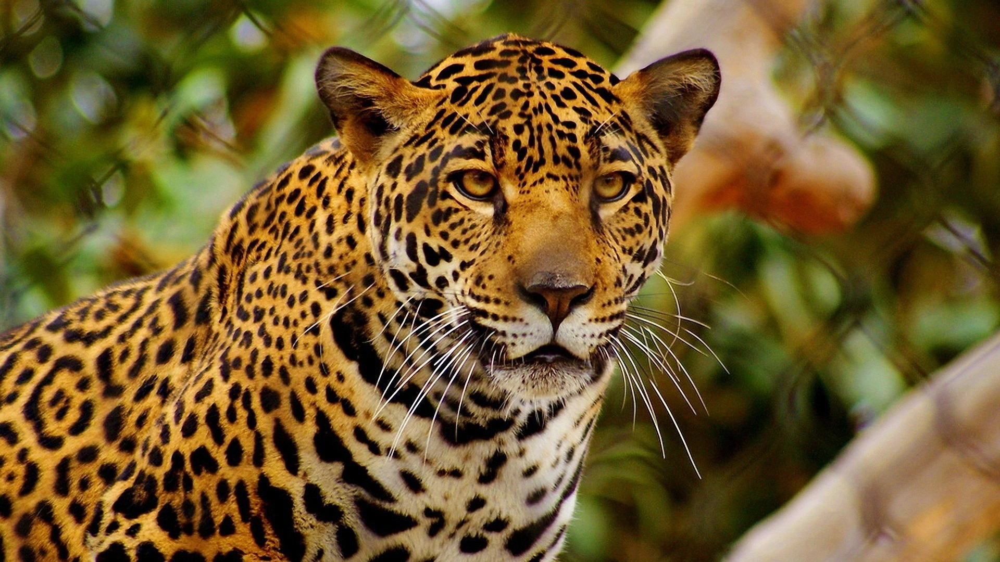
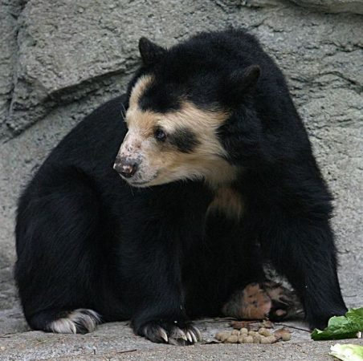
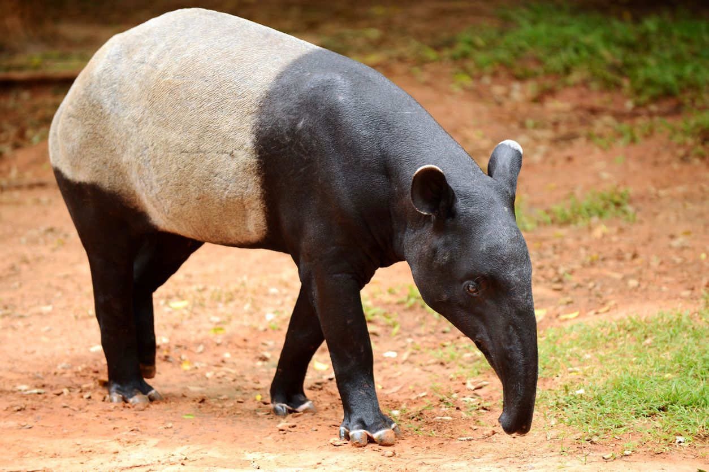
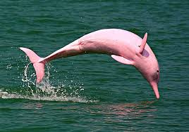
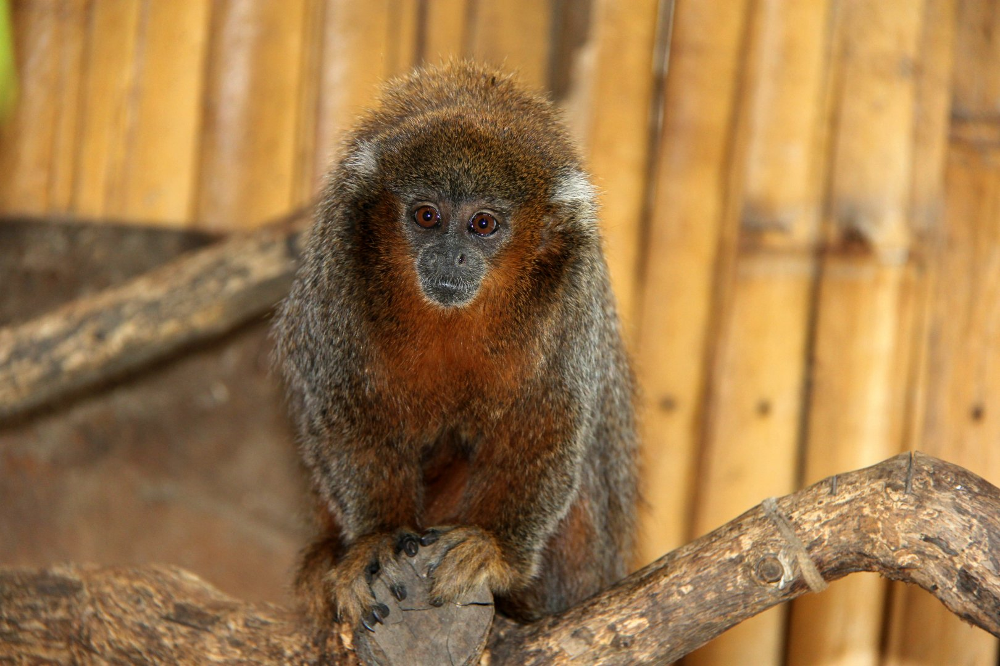
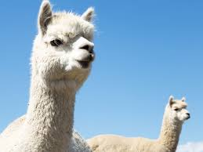
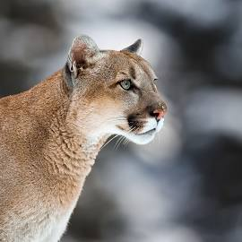
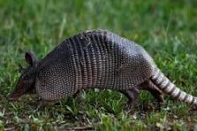
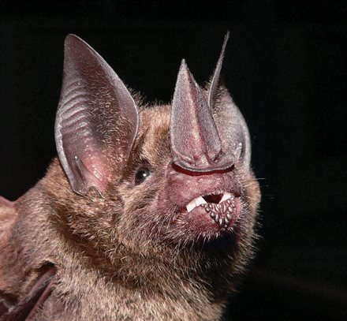
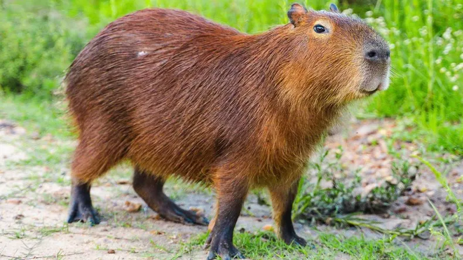

Jaguar (Panthera onca)
Hábitat: Selvas tropicales, bosques húmedos y sabanas.
Amenazas principales: Pérdida de hábitat, caza ilegal y conflictos con ganadería.
Medidas de conservación: Corredores ecológicos y control de caza furtiva.
Rol ecológico: Depredador tope que regula poblaciones.
Ejemplares estimados en Bolivia: Entre 1.200 y 1.500 individuos.

Oso Andino (Tremarctos ornatus)
Hábitat: Bosques nublados y páramos andinos.
Amenazas principales: Caza, deforestación y conflictos con ganaderos.
Medidas de conservación: Corredores biológicos y educación ambiental.
Rol ecológico: Dispersor de semillas y regenerador del bosque.
Ejemplares estimados en Bolivia: Aproximadamente 600 individuos.

Tapir Amazónico (Tapirus terrestris)
Hábitat: Bosques tropicales y zonas ribereñas.
Amenazas principales: Deforestación y caza ilegal.
Medidas de conservación: Áreas protegidas y control de caza.
Rol ecológico: Dispersor de semillas de gran tamaño.
Ejemplares estimados en Bolivia: Entre 800 y 1.000 individuos.

Delfín del Río Iténez (Inia boliviensis)
Hábitat: Cuenca del río Iténez y afluentes amazónicos.
Amenazas principales: Contaminación y represas fluviales.
Medidas de conservación: Control de contaminación y educación ambiental.
Rol ecológico: Regula poblaciones de peces.
Ejemplares estimados en Bolivia: Unos 900 individuos.

Mono Titi del Beni (Plecturocebus modestus)
Hábitat: Bosques tropicales del Beni.
Amenazas principales: Agricultura y tráfico ilegal.
Medidas de conservación: Protección de hábitat y educación comunitaria.
Rol ecológico: Dispersor de semillas.
Ejemplares estimados en Bolivia: Menos de 500 individuos.

Vicuña (Vicugna vicugna)
Hábitat: Altiplanos y páramos andinos.
Amenazas principales: Caza ilegal y competencia con ganado.
Medidas de conservación: Regulación del comercio de lana.
Rol ecológico: Mantiene el equilibrio de los pastizales.
Ejemplares estimados en Bolivia: Aproximadamente 8.000 individuos.

Puma (Puma concolor)
Hábitat: Desiertos, bosques y montañas.
Amenazas principales: Caza por conflictos con ganaderos.
Medidas de conservación: Control de caza y conservación de presas.
Rol ecológico: Depredador que regula herbívoros.
Ejemplares estimados en Bolivia: Entre 2.000 y 2.500 individuos.

Tatú Gigante (Priodontes maximus)
Hábitat: Bosques húmedos y sabanas.
Amenazas principales: Caza y destrucción de su hábitat.
Medidas de conservación: Protección de bosques amazónicos.
Rol ecológico: Aireador natural del suelo.
Ejemplares estimados en Bolivia: Menos de 400 individuos.

Murciélago Orejón de Bolivia (Histiotus laephotis)
Hábitat: Bosques secos interandinos.
Amenazas principales: Deforestación y pesticidas.
Medidas de conservación: Conservación de refugios naturales.
Rol ecológico: Controlador de insectos.
Ejemplares estimados en Bolivia: Menos de 300 individuos.

Capibara (Hydrochoerus hydrochaeris)
Hábitat: Zonas húmedas y ribereñas.
Amenazas principales: Pérdida de hábitat y caza por su carne.
Medidas de conservación: Áreas protegidas y control de caza.
Rol ecológico: Herbívoro que controla vegetación acuática.
Ejemplares estimados en Bolivia: Cerca de 1.800 individuos.